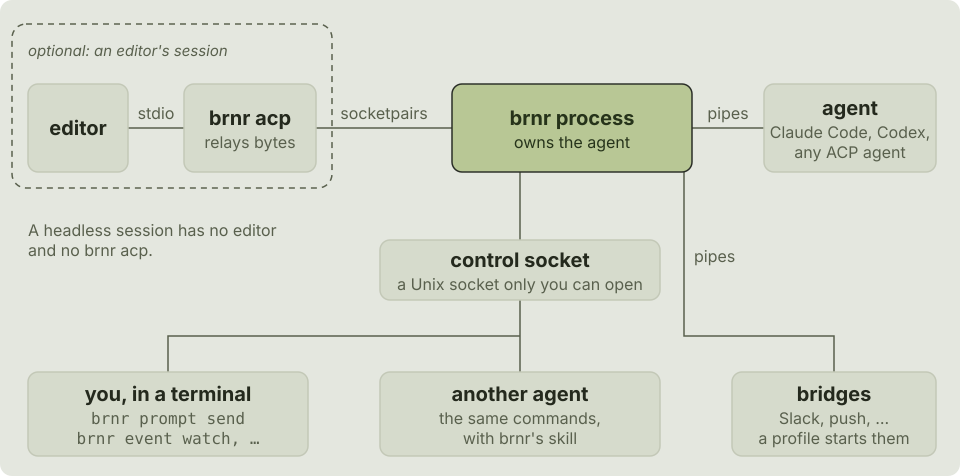

brnr keeps a coding agent reachable outside the editor that started it, and lets its session carry on after the editor closes. You can watch, steer and approve many agents from one terminal, from your phone, or from another agent.
brew install brnrhq/tap/brnr
Or build it with Cargo: cargo install brnr --locked
brnr permission allow $s p1 and brnr prompt send $s.Your editor is one way in, not the only one. Close the editor and carry its session on headless. You can also start sessions with no editor at all.
brnr acp -- brnr-claude-adapter # your editor's agent command brnr session resume $s # the editor closed: carry on brnr session new --cwd ~/work/project --prompt "fix the failing tests" -- brnr-claude-adapter
Watching an editor's session always works. Acting on it (sending, approving, changing the mode) is experimental, enabled one action at a time in a profile.
brnr session list and brnr permission requests show every session and every waiting approval, from editors and headless runs.
brnr session list # every session, open and ended brnr permission requests # every approval waiting brnr permission allow $s p1 brnr event watch $s # one session, live
$s is a session's id, as brnr session list shows it. Messages you send reach the agent as ordinary user messages, one turn at a time: brnr never sends a second prompt while a turn runs.
A CLI with --json, documented exit codes, events and a bundled skill. Claude Code or Codex can use it to start workers, give them work, wait for them, and answer their approvals.
brnr skill install # for Claude Code and Codex
brnr session new --json --stop-when-idle 600 --prompt - -- brnr-claude-adapter < task.md
brnr prompt send $s --wait --timeout 600 --json --prompt "what did you change?"
brnr permission allow $s p1 --json
The skill teaches an agent brnr's way: exact ids, waiting rather than polling, never approving what you didn't delegate, and cleaning up what it starts.
Bridges, programs you write or choose, forward events to Slack or push notifications, and send your answers back.
brnr event notify $s -- sh -c 'curl -s -d "$BRNR_TEXT" "https://ntfy.sh/${NTFY_TOPIC:?set it to a private topic}"'
# ~/.config/brnr/config.toml [profiles.work] # for sessions started with --profile work agent = ["brnr-claude-adapter"] [[profiles.work.bridges]] command = "~/bin/slack-bridge" # yours: events in, answers out events = ["permission_request", "turn_ended"]
event notify runs a command for each event: here, a push notification through ntfy, to a topic only you know (NTFY_TOPIC): anyone who knows an ntfy.sh topic can read it. A bridge speaks brnr's JSON-lines protocol both ways.
Your editor still talks to the agent over ACP. brnr moves the agent into a process of its own that you can reach from outside.

brnr process list lists them.brnr, and an adapter for each agent you use.
brew install brnrhq/tap/brnr brew install brnrhq/tap/brnr-claude-adapter # for Claude Code brew install brnrhq/tap/brnr-codex-adapter # for Codex
Or brnr alone with cargo install brnr --locked, and the adapters from npm. Install has the rest. brnr runs on macOS and Linux.
brnr works with any ACP agent. It doesn't include one.
For Claude Code and Codex, brnr uses the community's ACP adapters: claude-agent-acp by Zed Industries and contributors, and codex-acp by JetBrains. Install them from npm, or with Homebrew, which compiles them on your machine into standalone executables that need no Node.js. Either way, they run your own claude or codex.